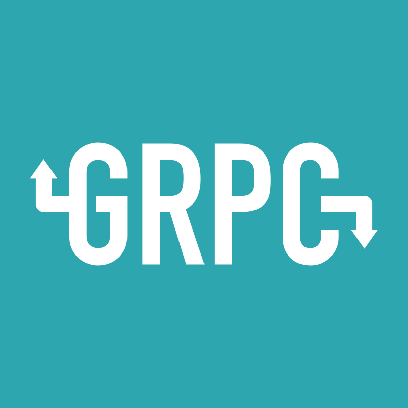

5.4 能不能不用證書？
如果你以前有涉獵過 gRPC+gRPC Gateway 這兩個元件，你肯定會遇到這個問題，就是 “為什麼非得開 TLS，才能夠實作同埠雙流量，能不能不開？” 又或是 “我不想用證書就實作這些功能，行不行？”。我被無數的人問過無數次這些問題，也說服過很多人，但說服歸說服，不代表放棄。前年不行，不代表今年不行，在今天我希望分享來龍去脈和具體的實作方式給你。

過去
為什麼 h2 不行
因為 net/http2 僅支援 "h2" 標識，而 "h2" 標識 HTTP/2 必須使用傳輸層安全性（TLS）的協議，此識別符號用於 TLS 應用層協議協商欄位以及識別 HTTP/2 over TLS。
簡單來講，也就 net/http2 必須使用 TLS 來互動。通俗來講就要用證書，那麼理所當然，也就無法支援非 TLS 的情況了。
尋找 h2c
那這條路不行，我們再想想別的路？那就是 HTTP/2 規範中的 "h2c" 標識了，"h2c" 標識允許透過明文 TCP 執行 HTTP/2 的協議，此識別符號用於 HTTP/1.1 升級標頭欄位以及標識 HTTP/2 over TCP。
但是這條路，早在 2015 年就已經有在 issue 中進行討論，當時 @bradfitz 明確表示 “不打算支援 h2c，對僅支援 TLS 的情況非常滿意，一年後再問我一次”，原文回覆如下：
We do not plan to support h2c. I don't want to receive bug reports from users who get bitten by transparent proxies messing with h2c. Also, until there's widespread browser support, it's not interesting. I am also not interested in being the chicken or the egg to get browser support going. I'm very happy with the TLS-only situation, and things like https://LetsEncrypt.org/ will make TLS much easier (and automatic) soon.
Ask me again in one year.
琢磨其他方式
使用 cmux
基於多路複用器 soheilhy/cmux 的另類實作 Stoakes/grpc-gateway-example。若對 cmux 的實作方式感興趣，還可以看看 《Golang: Run multiple services on one port》。
使用第三方 h2
這種屬於自己實作了 h2c 的邏輯，以此達到效果。
現在
經過社群的不斷討論，最後在 2018 年 6 月，代表 "h2c" 標誌的 golang.org/x/net/http2/h2c 標準庫正式合併進來，自此我們就可以使用官方標準庫（h2c），這個標準庫實作了 HTTP/2 的未加密模式，因此我們就可以利用該標準庫在同個埠上既提供 HTTP/1.1 又提供 HTTP/2 的功能了。
使用標準庫 h2c
import (
...
"golang.org/x/net/http2"
"golang.org/x/net/http2/h2c"
"google.golang.org/grpc"
"github.com/grpc-ecosystem/grpc-gateway/runtime"
pb "github.com/EDDYCJY/go-grpc-example/proto"
)
...
func grpcHandlerFunc(grpcServer *grpc.Server, otherHandler http.Handler) http.Handler {
return h2c.NewHandler(http.HandlerFunc(func(w http.ResponseWriter, r *http.Request) {
if r.ProtoMajor == 2 && strings.Contains(r.Header.Get("Content-Type"), "application/grpc") {
grpcServer.ServeHTTP(w, r)
} else {
otherHandler.ServeHTTP(w, r)
}
}), &http2.Server{})
}
func main() {
server := grpc.NewServer()
pb.RegisterSearchServiceServer(server, &SearchService{})
mux := http.NewServeMux()
gwmux := runtime.NewServeMux()
dopts := []grpc.DialOption{grpc.WithInsecure()}
err := pb.RegisterSearchServiceHandlerFromEndpoint(context.Background(), gwmux, "localhost:"+PORT, dopts)
...
mux.Handle("/", gwmux)
http.ListenAndServe(":"+PORT, grpcHandlerFunc(server, mux))
}
我們可以看到關鍵之處在於呼叫了 h2c.NewHandler 方法進行了特殊處理，h2c.NewHandler 會返回一個 http.handler，主要的內部邏輯是攔截了所有 h2c 流量，然後根據不同的請求流量型別將其劫持並重定向到相應的 Hander 中去處理。
驗證
HTTP/1.1
$ curl -X GET 'http://127.0.0.1:9005/search?request=EDDYCJY'
{"response":"EDDYCJY"}
HTTP/2(gRPC)
...
func main() {
conn, err := grpc.Dial(":"+PORT, grpc.WithInsecure())
...
client := pb.NewSearchServiceClient(conn)
resp, err := client.Search(context.Background(), &pb.SearchRequest{
Request: "gRPC",
})
}
輸出結果：
$ go run main.go
2019/06/21 20:04:09 resp: gRPC h2c Server
總結
在本文中我介紹了大致的前因後果，且介紹了幾種解決方法，我建議你選擇官方的 h2c 標準庫去實作這個功能，也簡單。在最後，不管你是否曾經為這個問題煩惱過許久，又或者正在糾結，都希望這篇文章能夠幫到你。